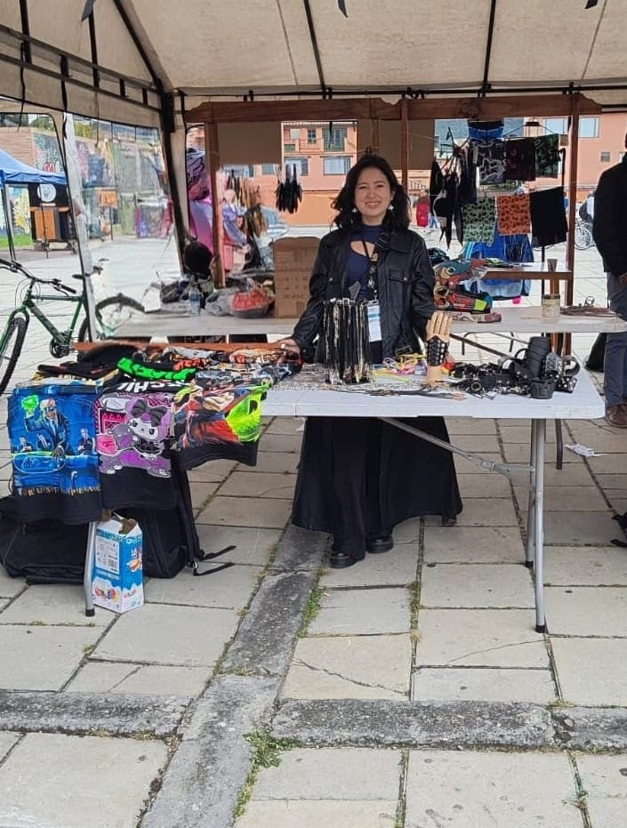

Nosotros
volver al inicio

Bienvenido al universo Cyberduck
Para quienes prefieren piezas con carácter, hechas con conciencia ambiental, y no productos pensados para durar una temporada.
Desde el inicio apostamos por lo único: ropa, accesorios y objetos 3D que conectan con la identidad de cada persona que nos elige. Diseñamos cuidando cada detalle, porque creemos que lo que te representa merece tiempo y atención.
Explora, personaliza y hazlo tuyo. Porque Cyberduck no sigue el ritmo del fast fashion, ni tampoco quiere hacerlo a costa de nuestro planeta. Creamos con conciencia, para que lo que uses hoy también tenga sentido mañana.
3+
años creando
500+
piezas vendidas
100%
hecho con amor